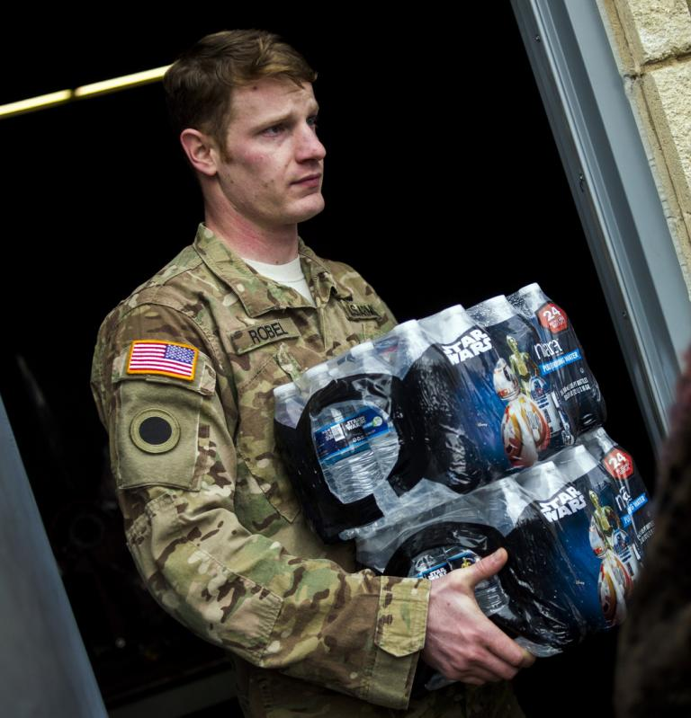

How the people of Flint, Mich., ended up with contaminated drinking water
Gov. Rick Snyder apologized to the residents of Flint, Mich., Tuesday evening for the failure in state, local and federal leadership resulting in a water contamination crisis that has consumed the city for nearly two years.
"To you, the people of Flint, I say tonight as I have before, I am sorry and I will fix it," Snyder said in his annual State of the State address, calling on state lawmakers to approve $28 million in funds to help replace water faucets in city schools and daycare centers, do diagnostic tests and treat children who may have been exposed to lead and other hazardous chemicals, and study the city's piping system.
Snyder's apology came amid calls for his resignation over what critics charge has been a delayed and neglectful response to the city's water crisis. Flint residents began complaining about the taste, odor and color of their tap water as well as side effects like rashes and hair loss within a month after the city switched its drinking water supply from the Detroit Water and Sewerage Department to the Flint River in April 2014. But it wasn't until October 2015 — after reports revealed an increase in lead-in-blood levels among Flint residents and children in particular — that Snyder finally ordered Flint to stop using the river water and return to Detroit's supply.
Over the past few weeks, the local crisis has continued to snowball into a national issue, with Snyder declaring a state of emergency and deploying the Michigan National Guard to distribute water bottles and filters, as federal officials launched an investigation. Over the weekend President Obama signed an emergency declaration and ordered the Federal Emergency Management Agency and the Department of Homeland Security to coordinate in bringing federal aide to Flint.
Flint — and Snyder — have even become talking points on the presidential campaign trail. During Sunday's Democratic debate, Hillary Clinton admonished Snyder, accusing him of deliberately ignoring the basic needs of an already disadvantaged community.
"We've had a city in the United States of America where the population, which is poor in many ways and majority African-American, has been drinking and bathing in lead-contaminated water. And the governor of that state acted as though he didn't really care," Clinton said. "He had a request for help that he had basically stonewalled. I'll tell you what — if the kids in a rich suburb of Detroit had been drinking contaminated water and being bathed in it, there would've been action."
Democratic candidate Bernie Sanders also commented on the Flint water crisis, saying Snyder should resign.
Flint Mayor Karen Weaver — who met with President Obama Tuesday — joined Hillary for America's national political director on a phone call with reporters earlier in the day to discuss Clinton's response to the water crisis and Flint's needs going forward.
"People are angry, they're scared, they're confused, they need support. We need more than just water and filters coming in," Weaver said. "What are we going to do for these kids and families that have been impacted?"
Weaver said she was grateful to Clinton for speaking out about Flint during Sunday's debate, and especially for questioning how this situation would have played out in a city with different demographics than Flint, a predominately black community with more than 40 percent of its population living below the poverty line.
"This is also a class issue," Weaver said. "Water is a basic right; it's a social issue."
As more than 1,000 people protested outside the state Capitol, Snyder promised that on Wednesday he would release all his emails regarding Flint from 2014 and 2015 — apparently in an effort to answer growing questions about what exactly he knew about the water situation and when.